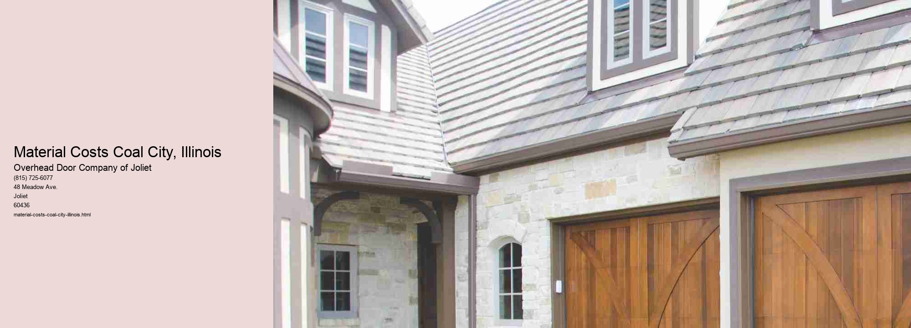

Material costs play a significant role in the economic landscape of any community, and Coal City, Illinois, is no exception.
Coal City, historically known for its mining roots, has evolved over the years, yet it still maintains a connection to industries reliant on raw materials. The cost of these materials can fluctuate based on a range of factors, from global market trends to local economic conditions. Understanding these influences is crucial for residents and businesses alike as they navigate the challenges of budgeting and financial planning.
One of the primary factors influencing material costs in Coal City is transportation. Given its location in the Midwest, Coal City benefits from a vast network of highways and railroads that facilitate the efficient movement of goods. However, the costs associated with transportation can vary significantly. Fuel prices, for instance, are a major determinant in the overall cost of transporting materials. When fuel prices rise, so too do the costs of materials, as suppliers pass these increased expenses onto consumers. This ripple effect can be felt throughout the community, influencing everything from construction projects to the price of goods at local stores.
Moreover, the global supply chain plays a pivotal role in determining material costs. In recent years, disruptions such as the COVID-19 pandemic have highlighted the vulnerabilities in supply chains worldwide. Coal City is not immune to these disruptions. Delays in shipping, shortages of raw materials, and increased demand have all contributed to rising costs. For local businesses, these fluctuations can present significant challenges, particularly for those operating on tight margins. Adapting to these changes requires flexibility and often, a reevaluation of supply sources and inventory practices.
Local economic conditions also have a direct impact on material costs.
Environmental factors are another consideration in the discussion of material costs. As sustainability becomes an increasingly important issue, the demand for environmentally friendly materials has grown. In Coal City, as in many other places, this shift can influence costs.
In conclusion, material costs in Coal City, Illinois, are shaped by a complex interplay of transportation dynamics, global supply chain issues, local economic conditions, and environmental considerations. For residents and businesses, understanding these factors is essential to making informed financial decisions. As the community continues to navigate these challenges, the ability to adapt and respond to changing material costs will be crucial in ensuring economic stability and growth.
Labor Costs Coal City, Illinois